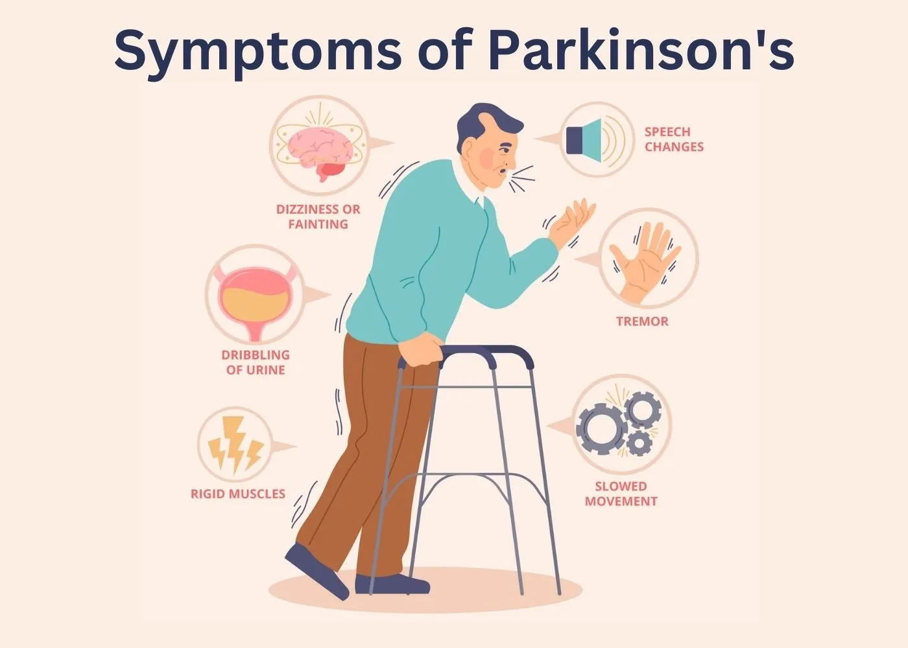

Voice Sample Identification for Early Parkinson Detection

What is Parkinson?
Parkinson is the second most common neurodegenerative disease in the world [c3]. The disease affects motor neurons, leading to a gradual decline in movement control. Although scientists have an understanding of the disease—the death of chemical receptors that are responsible for the development of dopamine—they have yet to understand the underlying cause and how to prevent the neurodegenerative disease from developing. Lack of understanding of the underlying cause of Parkinson is an especially prominent issue and challenge, as the pre-motor or prodromal phase of Parkinson may start as early as 12–14 years before the earliest symptoms become visible; hence, this disease becomes almost impossible to detect and prevent [c2]. Despite the shortcomings of science, research has shown that one of the earliest signs of this disease is an altered voice that may sound softer or hoarser. Patients suffering from Parkinson’s disease often experience difficulty communicating over the telephone, as their speech may be misheard or misunderstood. Identifying these early symptoms can help patients receive medical treatments faster, giving them an effective way of slowing down the disease. This scientific paper aims to identify and distinguish the voice of those showing early symptoms, using machine learning as a tool to analyze sound wave frequency of words with an “ah” sound—like ‘father’ and ‘car’.
Study’s Approach
To make an accurate prediction, three models were used, analyzed, and compared throughout this experiment: random forest, linear regression, and CNN. Each of these three models computes and analyzes frequency waves in a different form. Random forest makes a prediction by combining many simple decisions rather than relying on a single rule, by averaging the results from multiple decision paths. Linear regression, on the other hand, is a simple machine learning model used to understand the relationship between two variables and make predictions based on that relationship; it works by finding a straight line that best represents how one value changes as another value changes. Lastly, CNN is used to recognize patterns in images by analyzing small regions of the image at a time.
Using the mean of features that describe sound frequencies as the main observable variable, the study analyzed 40 people with Parkinson’s disease and 41 people without the disease. Linear regression performed poorly across all different ways of analyzing sound. Random forest, however, achieved better classification performance, showing that changes and variability in sound provided better discriminative information compared to average values alone. The study’s CNN model, however, performed the best. The model created images of voice sounds to effectively distinguish between people with Parkinson’s disease and healthy individuals, and this image-based approach was able to successfully identify those diagnosed with Parkinson’s disease.
Findings
The study was able to show that remotely collected voice recordings via telephone can be reliably used to distinguish between people who are showing early symptoms of Parkinson’s disease and those who are healthy. The CNN model performed significantly better than other traditional machine learning approaches by analyzing spectrogram images of the recordings and accurately classifying them as either healthy individuals or those displaying early symptoms of the disease. This study highlights a non-invasive and low-cost data collection method for early disease detection. Since voice recordings could be collected remotely, this study increases convenience and accessibility for individuals at risk of this disease, especially those living in rural or medically underserved areas. This form of machine learning analysis is especially important, as clinicians may not be able to differentiate subtle changes in voice frequency as effectively as a machine learning model. This demonstrates how data science techniques can support medical professionals by providing additional tools for early screening and monitoring of Parkinson’s disease progression.
Addtional Reflection
In addition to its clinical implications, this study offers an important demonstration of the growth within the interdisciplinary field of medicine, signal processing, and machine learning. Traditional diagnosis, treatments, and neurological assessments relied heavily on physical examination and symptoms reported by the patient themselves, which could pose some challenges, including lack of clinician experience. Thus, machine learning found a way to offer a more reliable and reproducible method for detecting these early symptoms, detecting very small and subtle changes in biological signals such as changes in voice frequency and variability—something that is not perceptible to the human ear. This is an extremely valuable and important milestone, especially in the field of medicine and for diseases like Parkinson, as early symptoms are often mild and progress slowly over time.
With machine learning, especially in the interdisciplinary field of medicine, we can see a stronger validity of the study’s findings when multiple model comparison is made. Evaluating and comparing the results of linear regression, random forest, and CNN allows for a clear, in-depth understanding of how different models behave and how their modeling assumptions affect performance. With linear regression, the assumption is always a simple linear relationship between the variables; however, in biology, variables and their relationships are often extremely complicated and highly nonlinear. Random forest can partially address this issue as it aggregates multiple decision trees but still relies on features that were manually engineered. CNN in a study like this offers automatically learned hierarchical patterns that result in spectrogram images, allowing them to capture different structures in voice signals with more accuracy, which explains why CNN performed better than all other models, achieving a higher classification accuracy.
Overall, the study had deep emphasis on the life-changing importance of early detection and preventive healthcare, especially for incurable diseases like Parkinson. By leveraging tools like machine learning, researchers can provide a promising and accessible pathway towards early diagnosis, improved patient outcome, and reduced strain on healthcare and its research systems. This research highlights how data-driven approaches are able to complement traditional medical practices, and contribute to be a more proactive and personalized healthcare solution.
By: Yasaman Baher